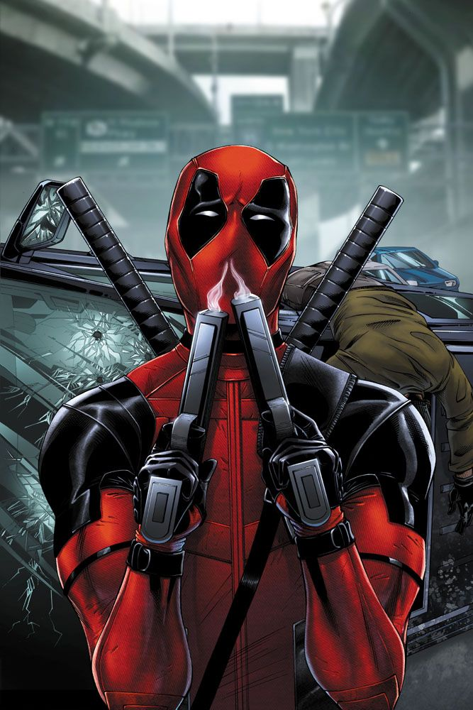

Deadpool (Wade Winston Wilson) is a fictional antihero appearing in American comic books published by Marvel Comics.
Created by artist/writer Rob Liefeld and writer Fabian Nicieza, the character first appeared in The New Mutants #98
(cover-dated February 1991). Initially Deadpool was depicted as a supervillain when he made his first appearance in
The New Mutants and later in issues of X-Force, but later evolved into his more recognizable antiheroic persona. Deadpool,
whose real name is Wade Wilson, is a disfigured and mentally unstable mercenary with the superhuman ability of an accelerated
healing factor and physical prowess. The character is known as the "Merc with a Mouth" because of his talkative nature
and tendency to break the fourth wall, which is used by writers for humorous effect and running gags.
Deadpool Wikipedia